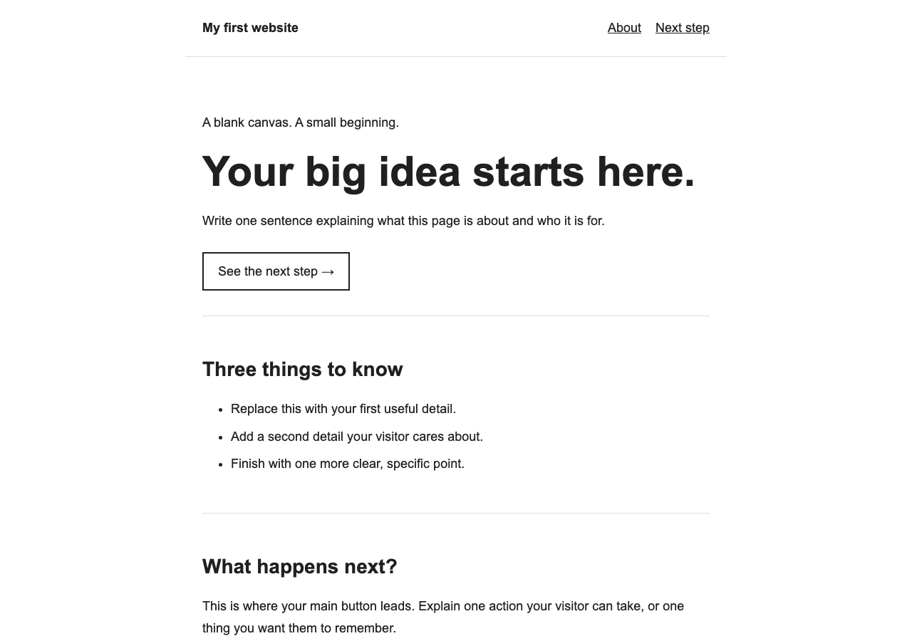
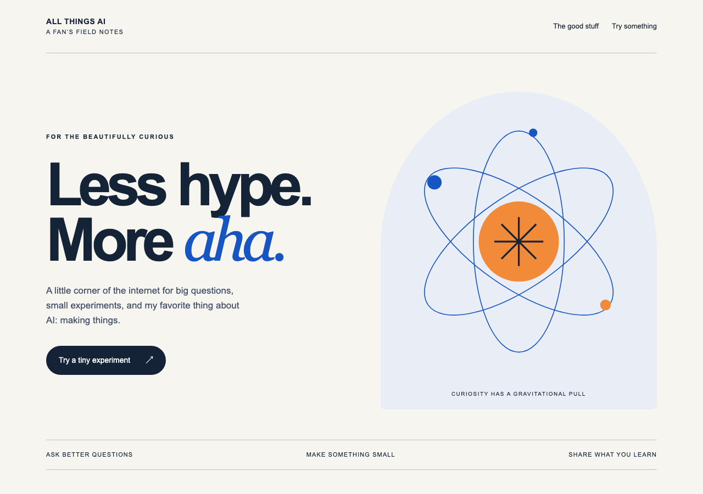
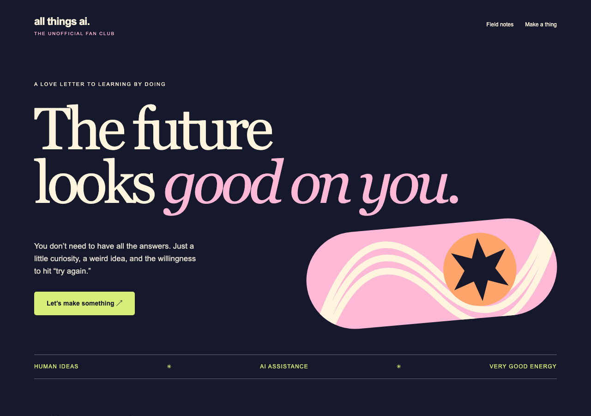
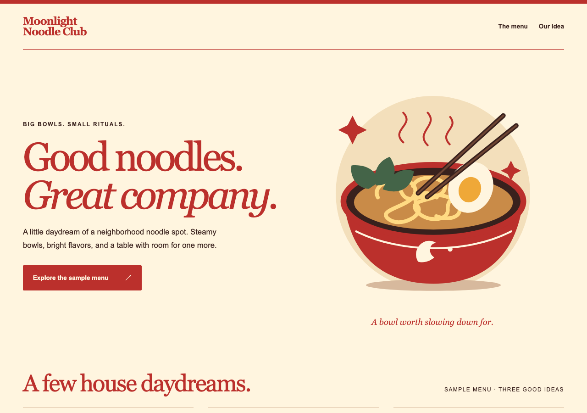
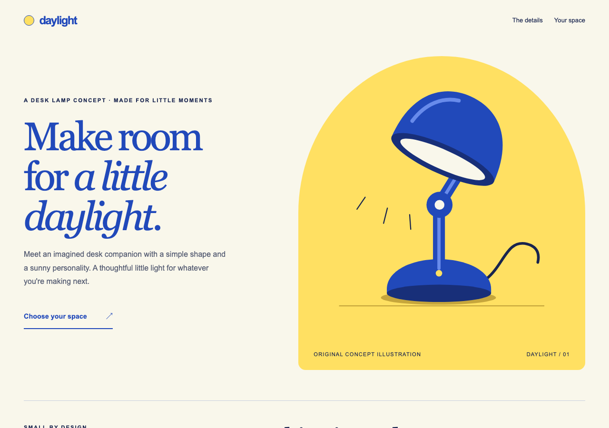
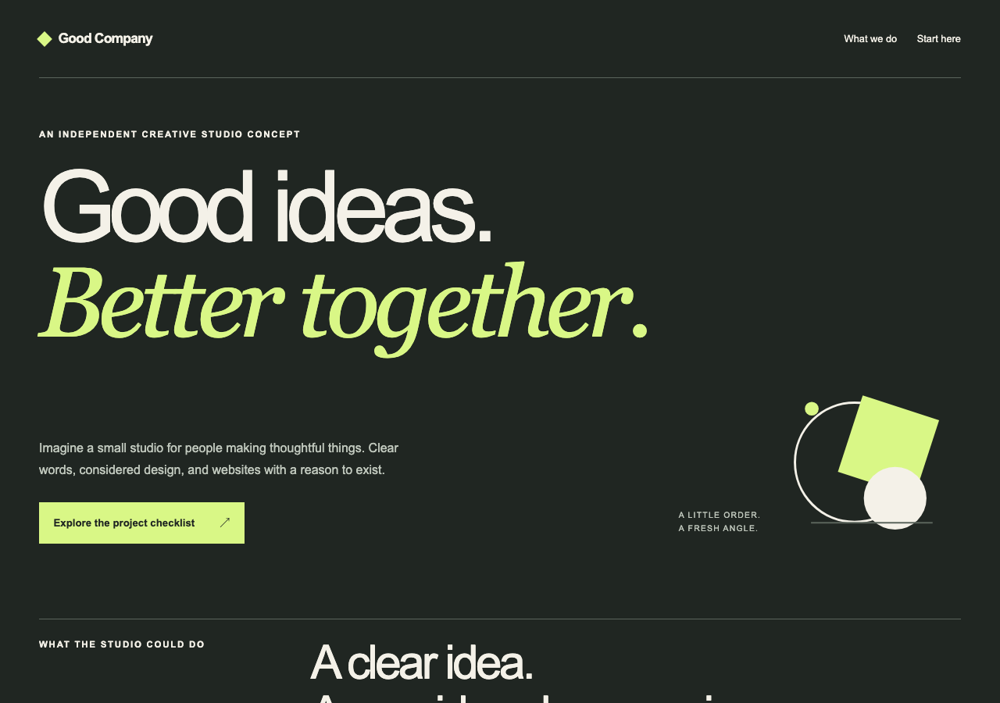
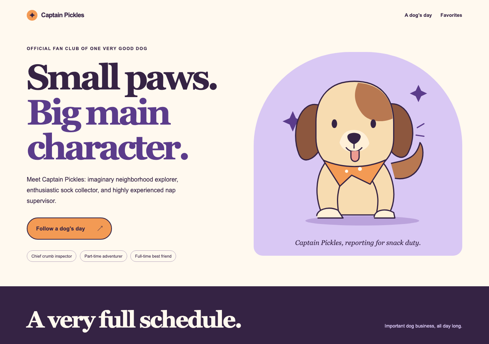

Choose a starter. Change everything.
What will
you make?
A dream restaurant. A very good dog. A love letter to AI. Pick a starting point, then make it unmistakably yours.
Every example works offline. Open a design, copy its folder into your own project, then give its index.html to your chatbot. No installation required.

Plain. Clear. Yours.
A clean starting point with three sections and one working link.
Open this starter ↗
Bright ideas, in orbit.
Blue and orange. Crisp type. A little gravitational pull.
Open this starter ↗
Good future energy.
A groovy fan page with peach waves and a bold point of view.
Open this starter ↗
Make a place at the table.
Remix Moonlight Noodle Club into the place you wish existed.
Open this starter ↗
Meet your next big idea.
Give one imaginary product a beautiful, simple introduction.
Open this starter ↗
Small business. Big character.
Create a home for the work you would love to do.
Open this starter ↗
The internet’s next favorite.
Make a little fan club for a very good companion.
Open this starter ↗Or start with your own idea.
These are invitations, not assignments. Keep your first site to one page, three sections, and one useful action. Tell your chatbot who it is for, decide what belongs in the first version, and plan three small changes.
Open the blank canvas →